Candidate 0 is today's look. Each candidate re-hues the current primitives at the same WCAG luminance, and all pass the full token test. Click a board for full size. Swatches: background, surface, text, primary, link, focus, danger, warning background.
w0-currentToday's values, for reference.
Fonts: "Outfit Variable" headings, "DM Sans Variable" body
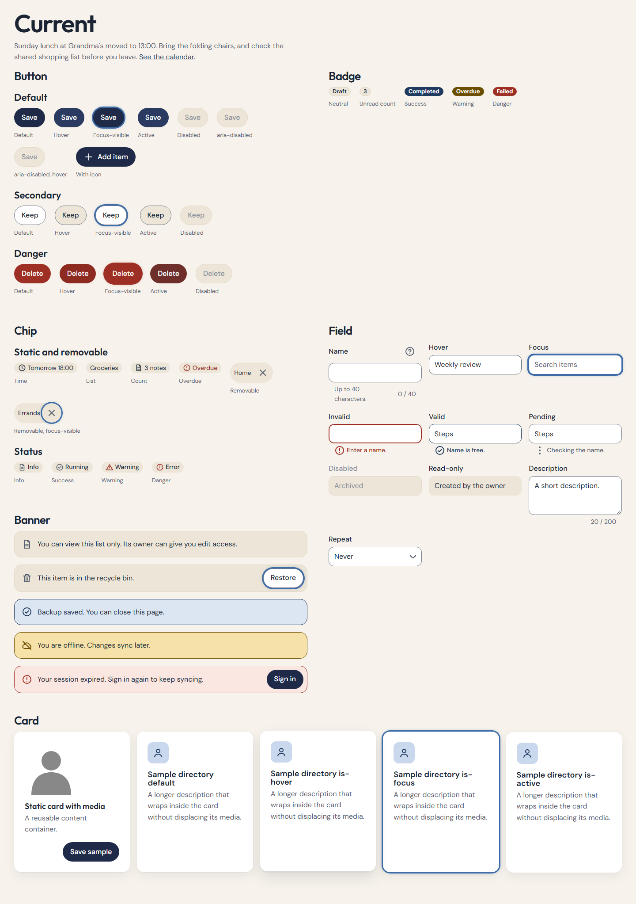
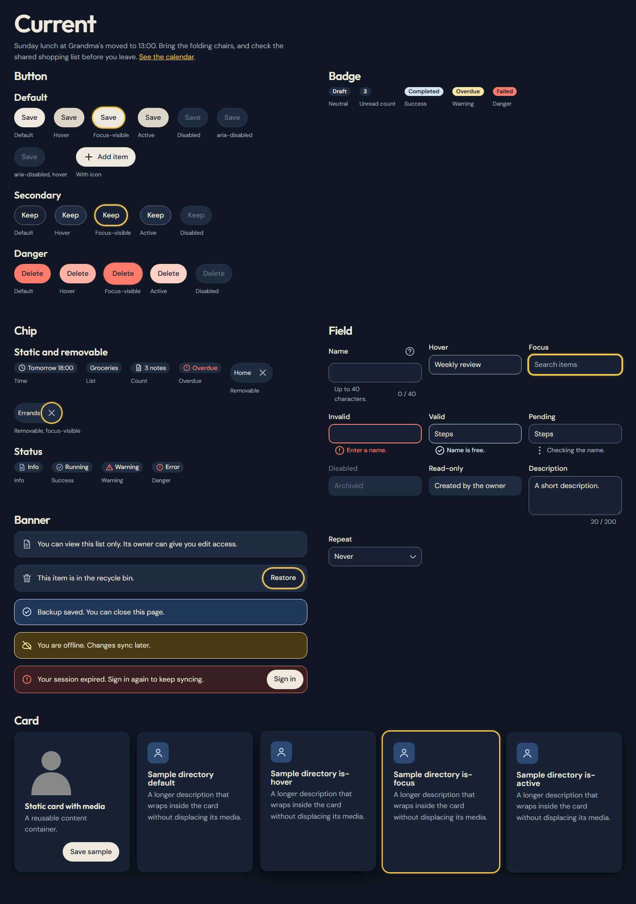
w1-indigo-amberThe closest to today: navy deepens toward indigo, saffron warms toward amber, fonts stay.
Fonts: Outfit headings, DM Sans body (unchanged)
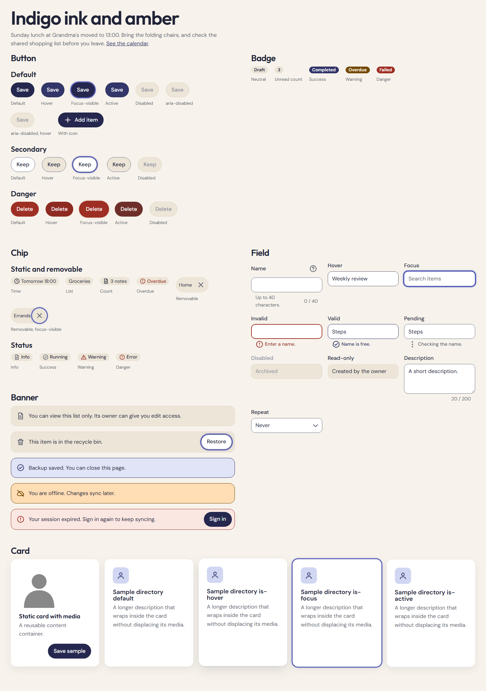
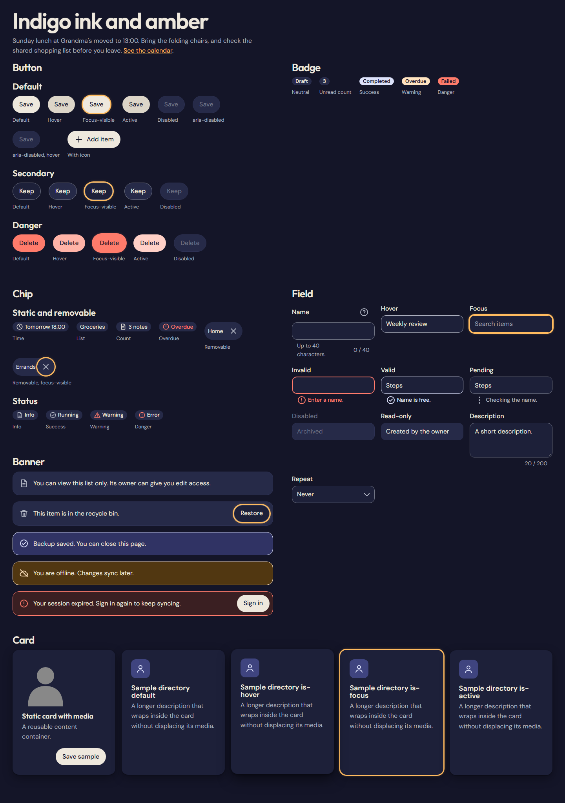
w2-espresso-clayEspresso brown ink on cream, clay-tinted chrome, honey warnings, and a soft serif for headings.
Fonts: Fraunces headings, Nunito Sans body
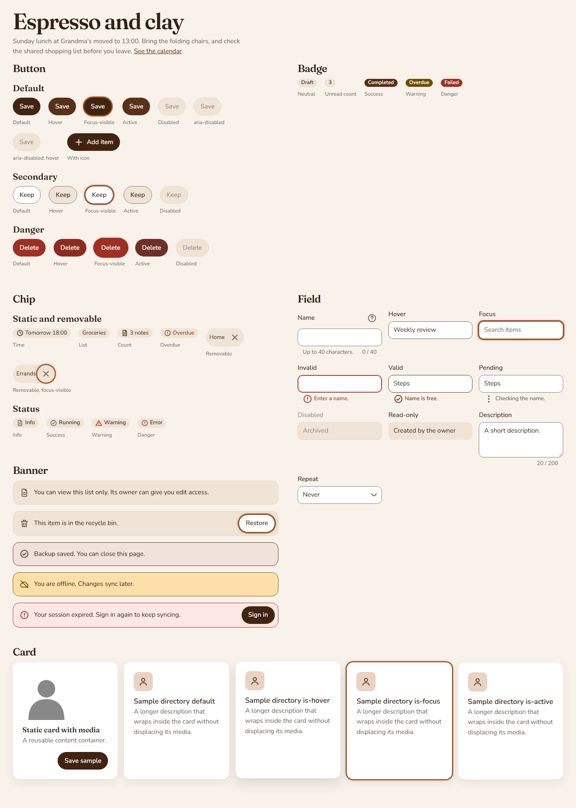
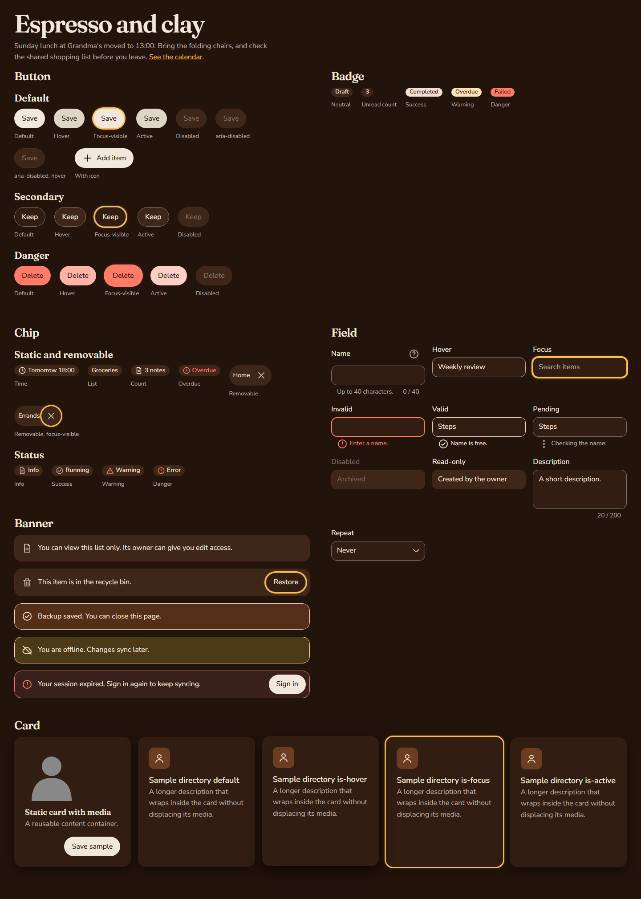
w3-forest-honeyDeep forest green ink, sand grounds, honey accents, and a characterful grotesque for headings.
Fonts: Bricolage Grotesque headings, Figtree body
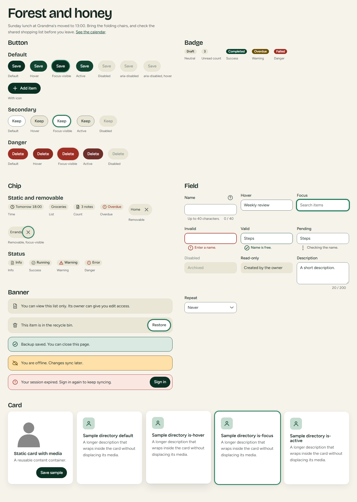
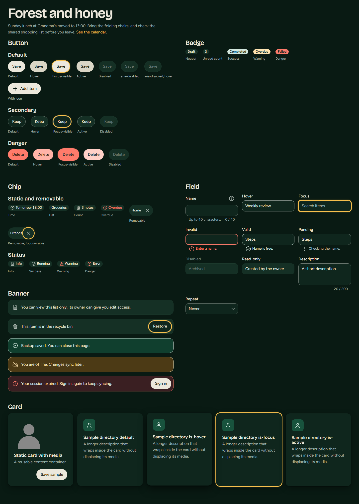
w4-plum-marigoldPlum ink on blush ivory, marigold accents, raspberry danger, and rounded Nunito throughout.
Fonts: Nunito headings and body
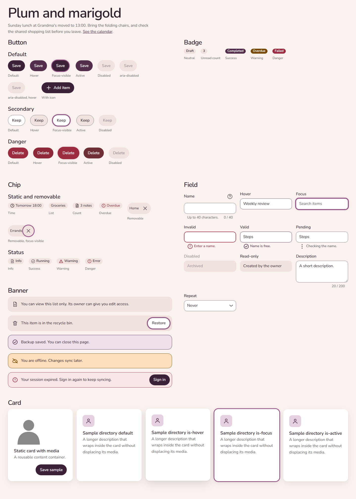
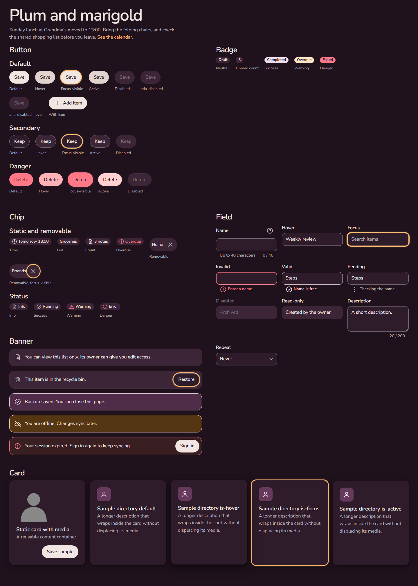
w5-teal-coralDeep teal ink, warm ivory, saffron accents, coral danger, and Plus Jakarta Sans throughout.
Fonts: Plus Jakarta Sans headings and body
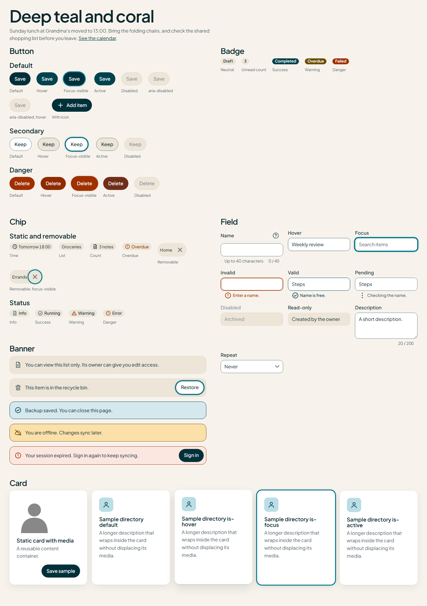
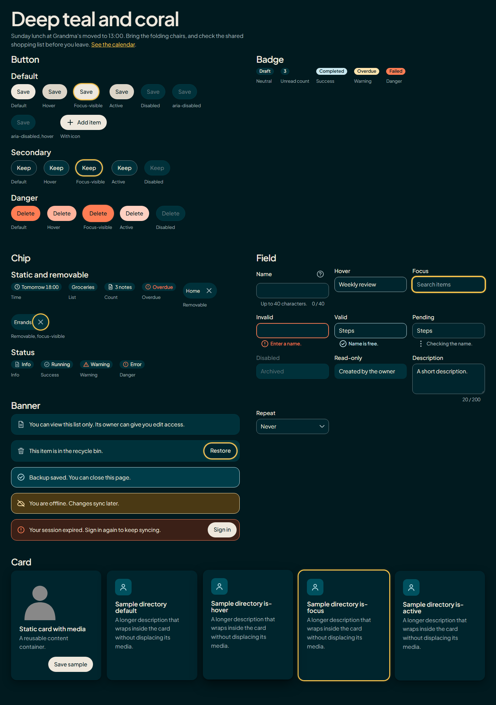